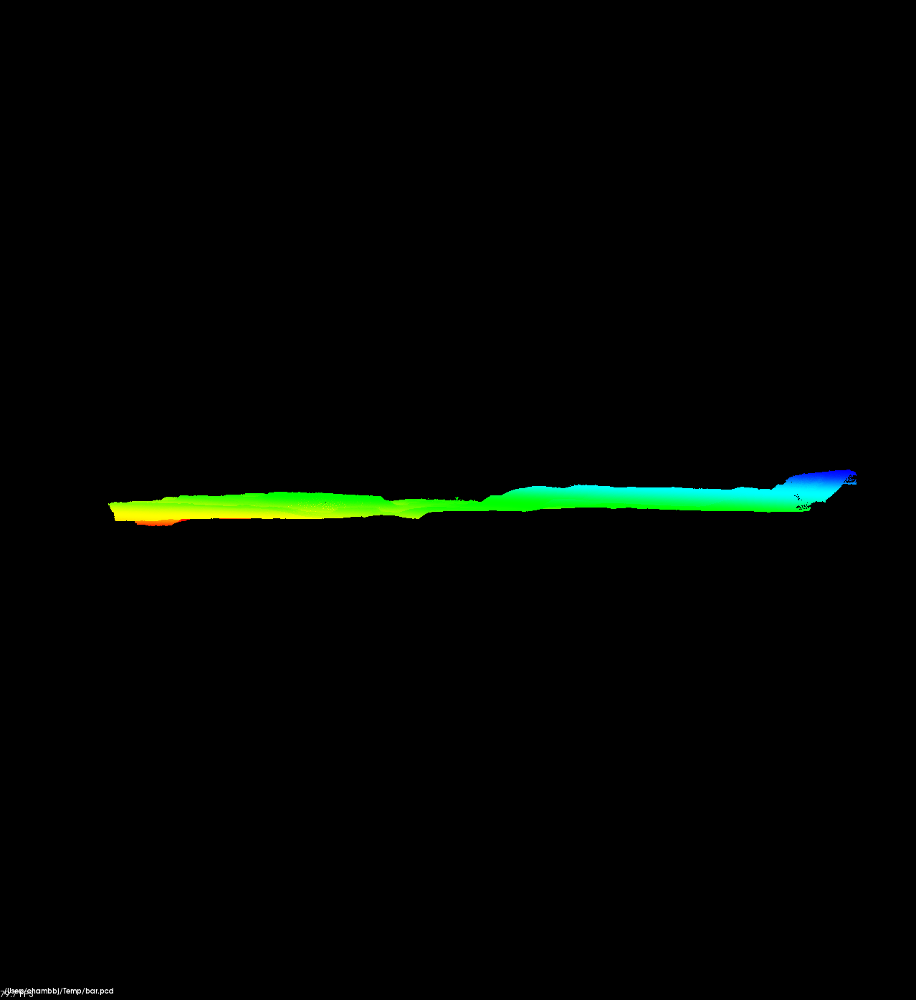
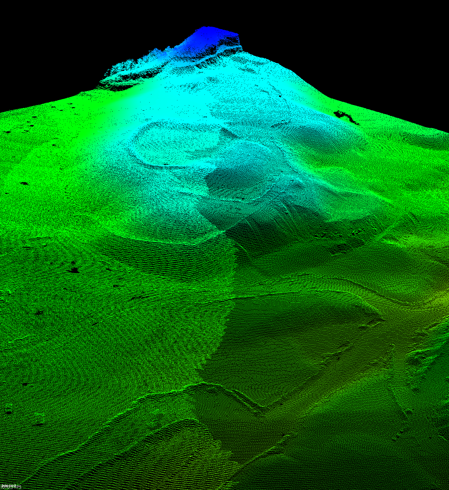
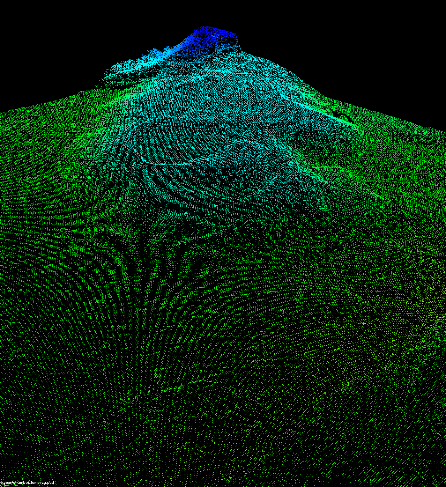

In our introductory post on the topic, we expressed a desire to bring together PDAL and PCL. The first step that we took nearly four years ago was to create a writer for the PCD format. Jump forward two years, and we eventually added PCL-backed drivers for both PCD reading and writing, adding support for not just ASCII data, but binary compressed data as well.
With these drivers in place, we can now take the obvious first step for anybody experimenting with PDAL and PCL -- just convert some data to PCD to use with PCL's command line tools. Of course, with PDAL translate, this is a breeze!
Step 1: Data Prep
Let's begin by downloading some data from WVView. We can transcode this to binary compressed PCD using the command:
$ pdal translate C23745.las C23745.pcd --writers.pcd.compression=true
Step 2: Outlier Removal
Now, let's take a look at the point cloud using pcl_viewer.
$ pcl_viewer C23745.pcd
The above view of the point cloud is taken by rotating the content on it's side (the default view is top-down), colorizing by elevation, and enlarging the point size slightly. It reveals an important aspect of the data: outliers. If you look closely, you may notice at least two outliers up in the air. Such outliers can adversely affect statistics (e.g., elevation range) and products (e.g., maximum Z grids). In the viewer, it has also skewed the color ramp (though a technique similar to contrast stretch could be used to scale the elevation color ramp more intelligently).
No problem! We can continue with PCL tools, in particular pcl_outlier_removal. (Note: PCL currently supports two methods of outlier removal: statistical and radius. These may or may not be the right tool for any given application, and the parameters shown are just an example. The proper approach to outlier removal will depend on your data and application.)
$ pcl_outlier_removal C23745.pcd C23745-filtered.pcd -method statistical -mean_k 8 -std_dev_mul 2.0
Statistical Outlier Removal filtering of a point cloud. For more information, use: pcl_outlier_removal -h
> Loading C23745.pcd [done, 284 ms : 3080188 points]
Available dimensions: x y z intensity rgba
Computing filtered cloud from 3080188 points with mean_k 8, std_dev_mul 2.000000, inliers 0 ...[done, 5221 ms : 3079018 points, 1170 indices removed]
> Saving C23745-filtered.pcd [done, 315 ms : 3079018 points]
We turn once again to pcl_viewer to visualize the result.
$ pcl_viewer C23745-filtered.pcd

As you can see, the outlier removal tool has removed the sky noise points, and the profile view appears to be much cleaner, with a more suitable color ramp.
Step 3: Subsampling
PCL's voxel grid filter can be used to subsample the data, by replacing all points within a three-dimensional voxel with the centroid of the points in that voxel. The leaf size here specifies the edge length of the voxel. (Note: The choice to subsample in this manner is destructive, and the data density will be reduced. This may or may not be desirable depending on your application.)
$ pcl_voxel_grid C23745-filtered.pcd C23745-vg.pcd -leaf 2.0,2.0,2.0
Downsample a cloud using pcl::VoxelGrid. For more information, use: pcl_voxel_grid -h
Using a leaf size of: 2.000000, 2.000000, 2.000000
Filtering data on field: z between: -inf ->inf
> Loading C23745-filtered.pcd [done, 288 ms : 3079018 points]
Available dimensions: x y z intensity rgba
> Computing [done, 340 ms : 707478 points]
> Saving C23745-vg.pcd [done, 97 ms : 707478 points]
Below are before and after shots of the same viewpoint, showing the subsampled point cloud created by the voxel grid filter, which is composed of roughly 25% of the original number of points.


Conclusion
Although this is a very loose integration of PCL and PDAL, we have begun to show how the two libraries can be used in tandem for data analysis and exploitation. In future posts, I will provide more details on how the conversions between PDAL and PCL take place and how PCL modules have been embedded directly into PDAL for more flexible and advanced processing workflows.